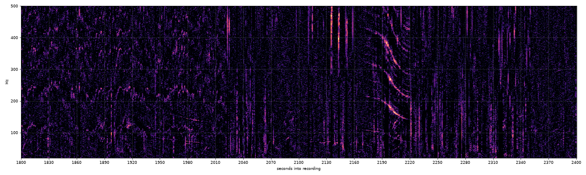
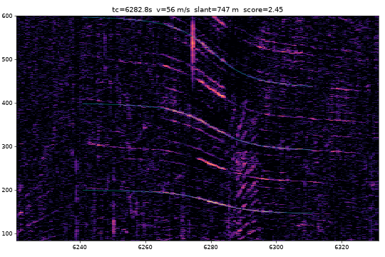
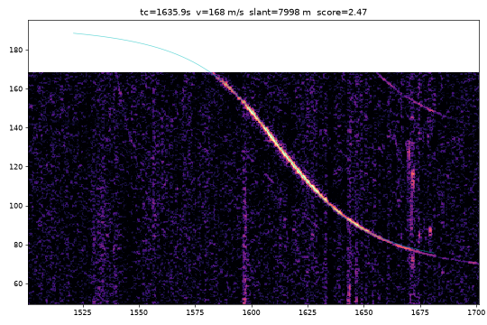
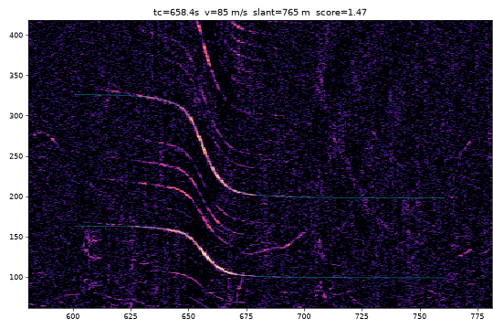
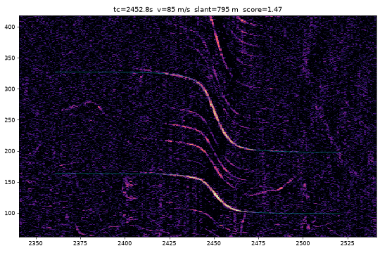
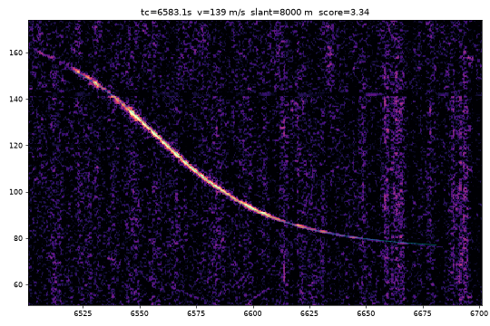

<title>Listening for Small Planes</title>
<meta name="claude:viewport-fit-sides" content="cover">
<link rel="preconnect" href="https://fonts.googleapis.com">
<link rel="stylesheet" href="https://fonts.googleapis.com/css2?family=Barlow+Condensed:wght@600;700&family=Source+Serif+4:ital,opsz,wght@0,8..60,400;0,8..60,600;1,8..60,400&family=JetBrains+Mono:wght@400;600&display=swap">
<style>
/* Layout: long-form single column (~65ch) with figures that may run wider; spectrogram images are the visual anchor. */
:root {
  --bg: #f3f4f2; --surface: #ffffff; --ink: #1a1f24; --muted: #5d6670; --line: #d6dbdf;
  --accent: #c2621a; --accent-soft: #f5e2d0; --cool: #2f6f8f; --ok: #2c7a5b; --bad: #b3372e;
  --display: "Barlow Condensed", "Arial Narrow", sans-serif;
  --body: "Source Serif 4", Georgia, serif;
  --mono: "JetBrains Mono", ui-monospace, Menlo, monospace;
}
@media (prefers-color-scheme: dark) { :root:not([data-theme="light"]) {
  --bg: #12171c; --surface: #1a2128; --ink: #e5e9ec; --muted: #97a2ab; --line: #2d3740;
  --accent: #ea9550; --accent-soft: #3a2a1c; --cool: #6fb3d4; --ok: #5cc196; --bad: #ec7a70; color-scheme: dark } }
:root[data-theme="dark"] {
  --bg: #12171c; --surface: #1a2128; --ink: #e5e9ec; --muted: #97a2ab; --line: #2d3740;
  --accent: #ea9550; --accent-soft: #3a2a1c; --cool: #6fb3d4; --ok: #5cc196; --bad: #ec7a70; color-scheme: dark }
body { background: var(--bg); color: var(--ink); font: 18px/1.65 var(--body); }
article { max-width: 760px; margin: 0 auto; padding-block: 48px 72px;
  padding-left: max(16px, env(safe-area-inset-left, 0px)); padding-right: max(16px, env(safe-area-inset-right, 0px));
  display: grid; gap: 22px; }
article > * { min-width: 0; }
h1, h2 { font-family: var(--display); font-weight: 700; line-height: 1.05; text-wrap: balance; margin: 0; letter-spacing: .005em; }
h1 { font-size: clamp(2.5rem, 7vw, 3.9rem); }
h2 { font-size: 1.85rem; margin-top: 28px; }
h2.part { font-size: 1rem; font-family: var(--mono); font-weight: 600; text-transform: uppercase; letter-spacing: .14em; color: var(--accent); margin-top: 40px; border-top: 1px solid var(--line); padding-top: 28px; }
p, ul, ol { margin: 0; max-width: 65ch; }
ul, ol { padding-left: 1.2em; display: grid; gap: 8px; }
a { color: var(--accent); text-underline-offset: 3px; }
a:focus-visible { outline: 2px solid var(--accent); outline-offset: 2px; }
code { font: .85em var(--mono); background: var(--surface); border: 1px solid var(--line); border-radius: 4px; padding: 1px 5px; }
pre { margin: 0; background: var(--surface); border: 1px solid var(--line); border-radius: 6px; padding: 14px 16px; overflow-x: auto; font: .8rem/1.6 var(--mono); }
.kicker { font: 600 .72rem/1 var(--mono); text-transform: uppercase; letter-spacing: .14em; color: var(--muted); }
.byline { color: var(--muted); font-size: .95rem; }
.lede { font-size: 1.2rem; }
figure { margin: 8px 0; display: grid; gap: 8px; }
figure img { width: 100%; height: auto; border-radius: 4px; border: 1px solid var(--line); background: #000; }
figure svg { width: 100%; height: auto; display: block; }
figcaption { font: .82rem/1.5 var(--mono); color: var(--muted); max-width: 70ch; }
.panel { background: var(--surface); border: 1px solid var(--line); border-radius: 6px; padding: 16px; overflow-x: auto; }
.panel svg text { font-family: var(--mono); font-size: 12px; fill: var(--muted); }
.panel svg .ink { fill: var(--ink); }
.panel svg .acc { fill: var(--accent); }
.pair { display: grid; grid-template-columns: repeat(auto-fit, minmax(240px, 1fr)); gap: 10px; }
.tablewrap { overflow-x: auto; }
table { border-collapse: collapse; width: 100%; font-size: .9rem; font-family: var(--body); }
th, td { text-align: left; padding: 8px 10px; border-bottom: 1px solid var(--line); vertical-align: top; }
th { font: 600 .68rem/1.3 var(--mono); text-transform: uppercase; letter-spacing: .1em; color: var(--muted); }
td.num { font-family: var(--mono); font-variant-numeric: tabular-nums; font-size: .82rem; white-space: nowrap; }
td.good { color: var(--ok); font-weight: 600; }
td.bad { color: var(--bad); font-weight: 600; }
.verdict { font: 600 .68rem/1 var(--mono); text-transform: uppercase; letter-spacing: .1em; white-space: nowrap; }
.verdict.no { color: var(--bad); }
.verdict.mixed { color: var(--accent); }
.note { border-left: 3px solid var(--accent); padding-left: 14px; color: var(--ink); }
footer { color: var(--muted); font-size: .9rem; border-top: 1px solid var(--line); padding-top: 16px; margin-top: 24px; }
@media (max-width: 480px) { body { font-size: 17px; } }
</style>

<article>
  <span class="kicker">Side project · Nov 2026</span>
  <h1>I geolocated backyard bird cams by listening for small planes</h1>
  <p class="byline">Dmytro Gaivoronsky · built with Claude Code: one night to get it working, then two days of experiments, Nov 7–9, 2026</p>

  <p class="lede">A Cessna flying past a microphone leaves a falling tone in the recording. With two or three of those, and public flight-tracking history, you can work out where the microphone was and when it started recording. I had Claude Code build a tool that does this, pointed it at random backyard livestreams on YouTube, and it found one bird feeder in Northeast Ohio on three separate days, each time within half a kilometer of the same spot.</p>

  <p>It also rated two other answers high and put them in the wrong state. The first half of this post is how it got built and where it broke. The second half is two days of experiments that followed: what stuck, what didn't, a test on 36 recordings it had never seen, and a list of things I'd still like to try. The code is <a href="https://github.com/dreamiurg/pinpoint">open source</a>.</p>

  <h2>The video that started it</h2>
  <p>colsto posted <a href="https://youtu.be/UytYrhYLOKI">I discovered a sound that leaks your exact location</a>. The idea: propeller planes produce a tone from their blades. As a plane passes, the Doppler effect bends that tone down. Most of the time you can't hear it over everything else, but it shows up clearly in a <a href="https://en.wikipedia.org/wiki/Spectrogram">spectrogram</a>. Planes broadcast their position over <a href="https://en.wikipedia.org/wiki/Automatic_Dependent_Surveillance%E2%80%93Broadcast">ADS-B</a>, and hobbyists record those broadcasts. So the sound in a video can be matched against where real planes actually were.</p>
  <p>On the evening of Nov 7 I asked Claude Code to build the whole thing overnight: give it a YouTube link, get a pin on a map. No questions, no check-ins. By morning it had a working pipeline, a test suite, and 22 test videos with known locations.</p>

  <h2>What a passing plane looks like</h2>
  <p>Here's 10 minutes of a bird-feeder livestream from Ohio. Time goes left to right, pitch goes up. The vertical streaks are bird calls and wind. Around the 2,200-second mark three parallel lines bend down together. That's one plane: the base tone of the propeller plus two harmonics.</p>
  <figure>
    
    <figcaption>Chickadee's LIVE Bird Feeder, Northeast Ohio, Sep 30 2026. 20–500 Hz, 1,800–2,400 s into the analyzed slice.</figcaption>
  </figure>
  <p>The shape of that curve carries most of the information:</p>
  <figure class="panel">
    <svg viewBox="0 0 700 300" role="img" aria-label="Diagram: frequency against time for a flyover. High plateau before, low plateau after, a steep drop at the closest approach. The gap between plateaus gives speed, the steepness gives distance, the midpoint gives the time.">
      <line x1="60" y1="20" x2="60" y2="250" stroke="var(--line)"/>
      <line x1="60" y1="250" x2="680" y2="250" stroke="var(--line)"/>
      <text x="10" y="30">pitch</text><text x="630" y="270">time</text>
      <path d="M60 70 C 280 70, 320 72, 360 140 S 430 210, 680 212" fill="none" stroke="var(--accent)" stroke-width="3"/>
      <path d="M60 110 C 280 110, 330 112, 360 165 S 470 238, 680 238" fill="none" stroke="var(--cool)" stroke-width="2" stroke-dasharray="6 5"/>
      <line x1="360" y1="20" x2="360" y2="250" stroke="var(--muted)" stroke-dasharray="3 4"/>
      <text class="ink" x="368" y="36">closest approach: exact second</text>
      <line x1="600" y1="70" x2="600" y2="212" stroke="var(--ink)"/>
      <line x1="594" y1="70" x2="606" y2="70" stroke="var(--ink)"/><line x1="594" y1="212" x2="606" y2="212" stroke="var(--ink)"/>
      <text class="ink" x="470" y="66">high → low gap: speed</text>
      <text class="acc" x="96" y="60">close pass: sharp drop</text>
      <text x="96" y="100" fill="var(--cool)" style="fill:var(--cool)">far pass: gentle drop</text>
    </svg>
    <figcaption>The pitch before and after gives the plane's speed. How sharply it drops gives the closest distance. The midpoint gives the second it passed, after allowing for the time the sound takes to arrive.</figcaption>
  </figure>

  <h2>From curves to a spot on the map</h2>
  <p>One curve is not enough. A Cessna at 1.8 km and 57 m/s could be almost anywhere a Cessna was flying. Two curves are better, because the gap between them is fixed. If the first plane passed at 2,200 s and the second at 6,282 s, the answer must be a place where two real planes passed exactly 4,082 seconds apart, at those distances and speeds.</p>
  <figure class="panel">
    <svg viewBox="0 0 700 250" role="img" aria-label="Pipeline: audio, find curves, flight history, candidate spots, score, answer">
      <g font-family="var(--mono)">
        <rect x="10" y="30" width="120" height="70" rx="6" fill="var(--accent-soft)" stroke="var(--accent)"/><text class="ink" x="22" y="58">YouTube audio</text><text x="22" y="80">2 h daytime slice</text>
        <rect x="160" y="30" width="120" height="70" rx="6" fill="var(--accent-soft)" stroke="var(--accent)"/><text class="ink" x="172" y="58">Find curves</text><text x="172" y="80">speed, distance, second</text>
        <rect x="160" y="150" width="120" height="70" rx="6" fill="var(--surface)" stroke="var(--cool)"/><text class="ink" x="172" y="178">ADS-B history</text><text x="172" y="200">adsb.lol, 1 day</text>
        <rect x="310" y="90" width="120" height="70" rx="6" fill="var(--surface)" stroke="var(--line)"/><text class="ink" x="322" y="118">Candidate grid</text><text x="322" y="140">200 m points</text>
        <rect x="460" y="90" width="110" height="70" rx="6" fill="var(--surface)" stroke="var(--line)"/><text class="ink" x="472" y="118">Score</text><text x="472" y="140">redraw each curve</text>
        <rect x="595" y="90" width="95" height="70" rx="6" fill="var(--accent)" /><text x="606" y="118" style="fill:var(--bg)">Pin + start</text><text x="606" y="140" style="fill:var(--bg)">time to 1 s</text>
      </g>
      <g stroke="var(--muted)" fill="none" stroke-width="1.5">
        <path d="M130 65 H160"/><path d="M280 65 H295 V115 H310"/><path d="M280 185 H295 V135 H310"/><path d="M430 125 H460"/><path d="M570 125 H595"/>
      </g>
    </svg>
    <figcaption>For every candidate spot, the tool takes the real tracks of the planes that could have made each curve, draws the exact curve they would produce there, and measures how well it lies on the spectrogram.</figcaption>
  </figure>
  <p>The pieces, roughly in the order they got built:</p>
  <ul>
    <li><b>Curve fitting.</b> Each candidate flyover gets a straight-line model (base pitch, speed, closest distance, time) fitted by <a href="https://en.wikipedia.org/wiki/Differential_evolution">differential evolution</a>. Harmonics count as extra evidence. Scoring also lets each plane's speed stretch by up to ±15%. The first version said that was for wind. It wasn't, and that turned out to matter (see Gotchas).</li>
    <li><b>Flight data.</b> <a href="https://github.com/adsblol/globe_history_2026">adsb.lol</a> publishes a full day of community-collected ADS-B traces as a ~4 GB download. The tool keeps only non-jet aircraft over the continental US, about 600 MB per day.</li>
    <li>A plane at 900 m is a lot closer to a backyard on a 400 m hill, so the tool uses Copernicus GLO-90 elevation.</li>
    <li><b>Extra flyovers.</b> The two strongest curves narrow the search, and every other curve must also line up with some real plane at the right second. A curve with no plane behind it costs nothing, since plenty of small planes have no transponder.</li>
  </ul>
  <p>The output is a map, a score, and a recording start time to the second. The start time later became the main check on whether an answer is right.</p>

  <h2>The first morning: 22 test videos, 2 good answers</h2>
  <p>Claude built a validation set of public YouTube recordings with a known place and day: beach cams, airport plane-spotting streams, nature soundscapes, railroad cams. Each one was searched within 100 km of its true location.</p>
  <p>Most had nothing to find. Six webcam archives had no audio track at all. Airport streams were full of planes, but taxiing and landing aircraft don't make clean passing curves. The two good answers were colsto's own recording and a <a href="https://www.youtube.com/watch?v=u8qudttB8PI">railroad camera in Huron, Ohio</a>, located 0.21 km from the real camera with a start time 33 seconds off. Searching that one again across a 300 km circle still landed 0.26 km away.</p>
  <p>Claude added a rule from that set: compare the best answer with the best answer using a different set of planes. If it wins by 15% or more, call it "high". At that point every high answer was right and every wrong one was low. With only two high answers, that rule was a guess. Wider searches later that day broke it, and two days later it was gone.</p>

  <h2>Sound only</h2>
  <p>The first video I tried for real was my own hiking Short. Claude pinned it from the title and the frames, which isn't the method I wanted to test. From then on the rule was sound only: the tool reads the duration, the date and the audio, and nothing that says where it was filmed.</p>
  <p>The next three videos I tried came back with "can't locate from sound": one had no planes, one was from 2022 (before the flight history starts), and one was a person talking for eleven minutes. The method needs something specific: long, unedited, outdoor audio with no talking, where a small plane happens to pass within about 8 km.</p>

  <h2>Hunting for home videos</h2>
  <p>I wanted examples nobody had picked for me. Home footage, few views, not a YouTuber. Backyard bird-feeder livestreams fit well. They run for hours, the mic is on, nobody talks, and the description usually names a region: "Northeast Ohio", "Northern Kentucky". The archive also comes with YouTube's go-live time.</p>
  <figure class="panel">
    <svg viewBox="0 0 700 230" role="img" aria-label="Funnel: about 200 search results, 52 real recordings screened, 36 with two or more flyovers, 20 searched, 4 passed both checks">
      <g font-family="var(--mono)">
        <rect x="10" y="10" width="680" height="34" rx="4" fill="var(--line)"/><text class="ink" x="20" y="32">~200 YouTube results for backyard, porch, feeder cam searches (most were AI ambience loops)</text>
        <rect x="10" y="54" width="520" height="34" rx="4" fill="var(--line)" opacity=".8"/><text class="ink" x="20" y="76">52 real US outdoor recordings screened</text>
        <rect x="10" y="98" width="360" height="34" rx="4" fill="var(--accent-soft)"/><text class="ink" x="20" y="120">36 with 2+ possible flyovers</text>
        <rect x="10" y="142" width="200" height="34" rx="4" fill="var(--accent-soft)"/><text class="ink" x="20" y="164">20 searched blind</text>
        <rect x="10" y="186" width="70" height="34" rx="4" fill="var(--accent)"/><text x="20" y="208" style="fill:var(--bg)">4</text><text class="ink" x="92" y="208">passed both checks</text>
      </g>
    </svg>
    <figcaption>Nov 8, 2026. "Searched blind" means a circle of 120–300 km around the stated region, with nothing else from the description.</figcaption>
  </figure>
  <p>Two checks decide whether an answer is right. The place has to be inside the region the uploader names. The start time the tool computes has to match YouTube's go-live time, which the tool never sees. A wrong spot can't hit the start time to within seconds by accident.</p>

  <h2>Four answers that check out</h2>
  <p>Margin is how far the best answer beats the best answer built from a different set of planes. Under 15% the tool called it low. That was the rule at the time.</p>
  <div class="tablewrap"><table>
    <thead><tr><th>Recording</th><th>Views</th><th>Answer</th><th>Start, found / real (UTC)</th><th>Planes</th><th>Margin</th></tr></thead>
    <tbody>
      <tr><td><a href="https://www.youtube.com/watch?v=U1bQZeogcsU">Ohio feeder, Sep 30</a></td><td class="num">264</td><td>Akron / Cuyahoga Falls</td><td class="num good">13:14:01 / 13:14:10</td><td>Mooney M20, C‑130J, 2× Cessna 172</td><td class="num">63%</td></tr>
      <tr><td><a href="https://www.youtube.com/watch?v=GPLUdm_Q9NQ">Ohio feeder, Oct 28</a></td><td class="num">183</td><td>0.45 km from Sep 30</td><td class="num good">14:07:30 / 14:07:18</td><td>Cessna 172, Piper Meridian, Piper Arrow</td><td class="num">32%</td></tr>
      <tr><td><a href="https://www.youtube.com/watch?v=UsyJgZpSuus">Ohio feeder, Oct 27</a></td><td class="num">128</td><td>0.2 km from Sep 30</td><td class="num good">16:55:31 / 16:55:38</td><td>Cessna 177RG, King Air</td><td class="num">11% (low)</td></tr>
      <tr><td><a href="https://www.youtube.com/watch?v=J8yvJJS7qTU">Kentucky feeder, Oct 21</a></td><td class="num">599</td><td>Boone County, KY</td><td class="num good">14:53:56 / 14:53:58</td><td>Saab 2000, Beech Baron, Twin Bonanza</td><td class="num">23%</td></tr>
    </tbody>
  </table></div>
  <p>The Ohio feeder is the one I'd show anyone. Three days, three unrelated sets of planes, each searched across the same 150 km circle, and all three answers fall inside half a kilometer. The Oct 27 answer was rated "low" because only two planes passed, so the tool itself wouldn't have claimed it. It was right anyway, to 7 seconds.</p>
  <figure class="panel">
    <svg viewBox="0 0 520 330" role="img" aria-label="Answers for the Ohio feeder on four days, in meters around the Sep 30 answer; all within one kilometer">
      <g stroke="var(--line)">
        <line x1="80" y1="30" x2="80" y2="300"/><line x1="142.5" y1="30" x2="142.5" y2="300"/><line x1="205" y1="30" x2="205" y2="300"/><line x1="267.5" y1="30" x2="267.5" y2="300"/><line x1="330" y1="30" x2="330" y2="300"/><line x1="392.5" y1="30" x2="392.5" y2="300"/><line x1="455" y1="30" x2="455" y2="300"/>
        <line x1="80" y1="52.5" x2="455" y2="52.5"/><line x1="80" y1="115" x2="455" y2="115"/><line x1="80" y1="177.5" x2="455" y2="177.5"/><line x1="80" y1="240" x2="455" y2="240"/>
      </g>
      <circle cx="330" cy="240" r="125" fill="none" stroke="var(--accent)" stroke-dasharray="5 5" opacity=".6"/>
      <text x="350" y="122">500 m</text>
      <circle cx="330" cy="240" r="7" fill="var(--accent)"/><text class="ink" x="342" y="256">Sep 30</text>
      <circle cx="330" cy="190" r="7" fill="var(--accent)"/><text class="ink" x="342" y="186">Oct 27</text>
      <circle cx="230.25" cy="190" r="7" fill="var(--accent)"/><text class="ink" x="178" y="176">Oct 28</text>
      <circle cx="175.5" cy="56.75" r="7" fill="none" stroke="var(--accent)" stroke-width="2"/><text class="ink" x="188" y="61">Oct 19 (local check)</text>
      <line x1="80" y1="318" x2="142.5" y2="318" stroke="var(--ink)" stroke-width="2"/><text x="150" y="322">250 m</text><text x="420" y="322">N ↑</text>
    </svg>
    <figcaption>Filled dots: blind 150 km searches. Hollow: Oct 19, at first found only by a search within 15 km of the Sep 30 answer, start time 6 s off. After round two the 150 km search finds it too.</figcaption>
  </figure>
  <figure>
    <div class="pair">
      
      
    </div>
    <figcaption>Left: a Cessna 172 over the Ohio feeder, 747 m away. Right: a Saab 2000 turboprop over the Kentucky feeder. The thin cyan line is the fitted model.</figcaption>
  </figure>

  <h2>Two wrong answers rated high</h2>
  <p>Two answers came back "high" and were wrong.</p>
  <ul>
    <li>The same Ohio feeder on Oct 19 landed near Pittsburgh with a 19% margin. It had matched three medical helicopters (an EC135, an AW139, another EC135). Its start time was 20:03. The stream actually went live at 13:51.</li>
    <li>A weather cam in Green Lake, Wisconsin landed in northern Illinois, 168 km away, with a 32% margin. Start time off by an hour and a half.</li>
  </ul>
  <p>Of the five blind "high" answers, three passed the clock check and two failed it. The 15% rule held at 100 km and broke at 150–300 km. A bigger area has more planes, so a coincidental match is more likely to score well. For Oct 19 I had it search again only within 15 km of the Sep 30 answer, and it found a spot 0.96 km away, with three different planes and a start time 6 seconds from the real one. The wide search had scored the helicopter match higher. Why it did took a separate experiment to find, below.</p>

  <h2>Where it fails</h2>
  <ul>
    <li>A single flyover with no known time put the answer 69 km off with a 0.8% margin, so the tool now refuses to answer. Adding a known start time and searching the whole US took 5.5 hours of compute and landed in the wrong state. The same setup works in a small region.</li>
    <li>Airport plane-spotting streams have lots of planes but no clean curves. Ground roll and landing flare aren't straight constant-speed passes.</li>
    <li>Four days of a Lake of the Ozarks dock cam produced zero flyovers. Boats make Doppler curves too, which doesn't help.</li>
    <li><b>Jets.</b> The tool started from the assumption that jets make broadband roar with nothing to fit. Under the approach into CVG, the Northern Kentucky feeder heard clean curves at 107–144 m/s. They were jets on approach. The tool skips jets because dozens fly the same path, and any one of them looks like the others.</li>
    <li><b>A "1 hour" backyard recording from outside Boston.</b> 71 views, real home footage, planes mentioned in the description. It was a 30-minute recording played twice. Identical curves 1,794 seconds apart can't match real planes, which can't fly the same pass twice. The date was also unknown, so even the de-looped half didn't match.</li>
    <li>Several livestream archives were mostly overnight, and small planes rarely fly at 3 am.</li>
  </ul>
  <figure>
    <div class="pair">
      
      
    </div>
    <figcaption>Boston: the flyover at 658 s (left) and at 2,452 s (right). The curve, harmonics and background noise are identical, so the second half is a copy.</figcaption>
  </figure>
  <figure>
    
    <figcaption>Northern Kentucky, Sep 8: fitted at 139 m/s and 8 km. Too fast for a Cessna. A jet on approach.</figcaption>
  </figure>

  <h2 class="part">Part two · Nov 8–9</h2>

  <h2>Going wide</h2>
  <p>After the demo I gave Claude a looser brief: try everything that might make this better, in every direction, run as many agents in parallel as it likes, and act as the coordinator. Over the next two days it ran about a dozen experiments. Each one was a sub-agent with its own folder and a written report, and nothing reached the main code until the coordinator had measured it on the same labeled recordings.</p>
  <p>All of it ran on one laptop with an external SSD for the flight data. Every search took a shared CPU lock, so experiments queued behind each other instead of fighting for cores and skewing each other's timings.</p>

  <h2>What made it in</h2>
  <div class="tablewrap"><table>
    <thead><tr><th>Change</th><th>What it fixed</th></tr></thead>
    <tbody>
      <tr><td>Faster scoring: one vectorized gather instead of a Python loop, one worker pool per search, flight data cut once per search</td><td>A 150 km search went from 145 s to 18 s with bit-identical output. Numba would have added about 10%, so no Rust and no numba.</td></tr>
      <tr><td>Drop helicopters from the flight data</td><td>Removed the Pittsburgh medical-helicopter answer for Oct 19. Rotorcraft are 6–9% of daily tracks, and their speed and straightness look just like small planes'.</td></tr>
      <tr><td>Silence window 30 → 60 s, and no early cut before the speed sweep</td><td>The real pair of planes for Oct 19 had been thrown out twice before scoring. Now the 150 km search lands 0.9 km from the feeder, start 3 s off, rated low.</td></tr>
      <tr><td>Doppler-scale check</td><td>On correct answers each main plane needs its speed stretched by 6% at most. If one needs more than 8%, the answer is low. This caught both wrong-high answers. It also demoted one correct answer whose spot was 0.9 km off.</td></tr>
      <tr><td><code>--decoys 5</code></td><td>A confidence rule that actually separates right from wrong. Next section.</td></tr>
    </tbody>
  </table></div>
  <p>On the 23 recordings I had labels for, wrong answers rated high went from 2 to 0, correct answers from 7 to 8, and the full run got 25% faster.</p>

  <h2>What didn't</h2>
  <div class="tablewrap"><table>
    <thead><tr><th>Idea</th><th></th><th>What happened</th></tr></thead>
    <tbody>
      <tr><td>Wind aloft from Doppler vs ground speed</td><td><span class="verdict no">Wrong premise</span></td><td>Someone on the ground hears the plane's speed over the ground. Wind only changes the speed of sound a little, a 1–4% effect. On 18 flyovers the best speed scale was 1.009 ± 0.046, and weather-model winds explained none of the spread.</td></tr>
      <tr><td>Aircraft type from the propeller's base tone</td><td><span class="verdict no">Dropped</span></td><td>The physics is right: 67–84 Hz for two-blade four-cylinder pistons, 126 Hz for an SR22, 99 Hz for a Saab 2000. In rescoring it rejected a third of wrong matches. In full searches it changed no outcome and lost one recording. Only half of ADS-B aircraft have a known type anyway.</td></tr>
      <tr><td>Narrower speed sweep, ±5%</td><td><span class="verdict no">Dropped</span></td><td>Broke the Oct 19 recovery. A spot 0.9 km off needs the planes 16% faster, so a tight sweep throws out answers that are close but not exact.</td></tr>
      <tr><td>Region from bird species (BirdNET)</td><td><span class="verdict no">No</span></td><td>Best guess a median 628 km from the truth. Feeder birds are the same everywhere east of the Plains. It does get the season right to about a week, which could help when the date is unknown.</td></tr>
      <tr><td>Temperature from cricket song</td><td><span class="verdict mixed">Works, doesn't help</span></td><td>The pitch of the dusk chorus moves about 94 Hz per °C and reads temperature to about 1 °C on good evenings. But the evening temperature curve is the same across half the Midwest, so it doesn't narrow the place.</td></tr>
      <tr><td>Date from mains hum (ENF)</td><td><span class="verdict mixed">Blocked</span></td><td>23 of 78 recordings carry 60 Hz grid hum, and two feeder streams in North Carolina and Georgia line up to 15 s by hum alone. Dating a single recording needs a log of grid frequency, and there's no free one for 2026. I've asked the FNET/GridEye team at UT Knoxville for a few days of data.</td></tr>
      <tr><td>"Sky Shazam": an index of every small-plane pass</td><td><span class="verdict mixed">Regional only</span></td><td>Over a 600 km box and 24 days, recordings with 4+ flyovers had the true day and spot in the top 5 three times out of four, with no date given. For the whole US over 1,000 days the index would be about 230 GB and a query about 6 hours. It also picked Oshkosh on the AirVenture arrival day for one recording, because dense traffic wins votes.</td></tr>
    </tbody>
  </table></div>

  <h2>A confidence score that means something</h2>
  <p>The 15% margin rule kept failing, and one experiment showed why. Take a recording, run its flyovers against the flight data of some other day, when it can't possibly match, and the margin rule still says "high" 11 times out of 65. Margin measures how far the winner beats the runner-up. With enough planes in the box, some combination always wins by a lot.</p>
  <p>So the tool now asks the wrong days directly. With <code>--decoys 5</code> it searches 5 other days of flight data with the same flyovers. The answer is high only when today's best score is at least 1.2× the best score from any wrong day, there are at least 3 flyovers, and the Doppler-scale check passes. With only two flyovers there's nothing left over to check the match against, so two-flyover answers are always low. The cost is a search about 6× longer.</p>

  <h2>The reality check: 36 recordings it had never seen</h2>
  <p>Everything so far was tuned on recordings I'd already looked at. So Claude collected 39 new 2026 livestream archives, kept the 36 on days whose flight data was already downloaded, and ran the tool on them unchanged. The only truth used was YouTube's go-live time.</p>
  <p>4 of 36 came out right. 30 were wrong and 2 got no answer.</p>
  <figure class="panel">
    <svg viewBox="0 0 700 260" role="img" aria-label="Decoy ratio for 34 answered recordings. Wrong answers, red, cluster between 0.80 and 1.03, with three at 1.10, 1.13 and 1.22. Correct answers, green, are at 0.93, 1.21, 1.28 and 2.23. The high threshold is at 1.2.">
      <line x1="60" y1="230" x2="640" y2="230" stroke="var(--line)"/>
      <g>
        <line x1="105" y1="230" x2="105" y2="236" stroke="var(--muted)"/><text x="94" y="252">0.8</text>
        <line x1="195" y1="230" x2="195" y2="236" stroke="var(--muted)"/><text x="184" y="252">0.9</text>
        <line x1="285" y1="230" x2="285" y2="236" stroke="var(--muted)"/><text x="274" y="252">1.0</text>
        <line x1="375" y1="230" x2="375" y2="236" stroke="var(--muted)"/><text x="364" y="252">1.1</text>
        <line x1="465" y1="230" x2="465" y2="236" stroke="var(--muted)"/><text x="454" y="252">1.2</text>
        <line x1="555" y1="230" x2="555" y2="236" stroke="var(--muted)"/><text x="544" y="252">1.3</text>
        <text x="604" y="252">2.2</text>
      </g>
      <path d="M582 226 l6 8 M588 226 l6 8" stroke="var(--muted)"/>
      <rect x="465" y="20" width="175" height="210" fill="var(--ok)" opacity=".08"/>
      <line x1="465" y1="20" x2="465" y2="230" stroke="var(--ok)" stroke-dasharray="4 4"/>
      <text class="ink" x="473" y="36">"high" from 1.2</text>
      <text x="10" y="154" style="fill:var(--bad)">wrong</text>
      <text x="10" y="204" style="fill:var(--ok)">right</text>
      <circle cx="105" cy="150" r="5" fill="var(--bad)"/>
      <circle cx="114" cy="150" r="5" fill="var(--bad)"/><circle cx="114" cy="137" r="5" fill="var(--bad)"/>
      <circle cx="123" cy="150" r="5" fill="var(--bad)"/><circle cx="123" cy="137" r="5" fill="var(--bad)"/>
      <circle cx="177" cy="150" r="5" fill="var(--bad)"/>
      <circle cx="195" cy="150" r="5" fill="var(--bad)"/><circle cx="195" cy="137" r="5" fill="var(--bad)"/>
      <circle cx="204" cy="150" r="5" fill="var(--bad)"/><circle cx="204" cy="137" r="5" fill="var(--bad)"/>
      <circle cx="213" cy="150" r="5" fill="var(--bad)"/>
      <circle cx="222" cy="150" r="5" fill="var(--bad)"/>
      <circle cx="231" cy="150" r="5" fill="var(--bad)"/>
      <circle cx="249" cy="150" r="5" fill="var(--bad)"/>
      <circle cx="258" cy="150" r="5" fill="var(--bad)"/><circle cx="258" cy="137" r="5" fill="var(--bad)"/>
      <circle cx="267" cy="150" r="5" fill="var(--bad)"/><circle cx="267" cy="137" r="5" fill="var(--bad)"/>
      <circle cx="276" cy="150" r="5" fill="var(--bad)"/>
      <circle cx="285" cy="150" r="5" fill="var(--bad)"/><circle cx="285" cy="137" r="5" fill="var(--bad)"/><circle cx="285" cy="124" r="5" fill="var(--bad)"/><circle cx="285" cy="111" r="5" fill="var(--bad)"/>
      <circle cx="294" cy="150" r="5" fill="var(--bad)"/><circle cx="294" cy="137" r="5" fill="var(--bad)"/>
      <circle cx="312" cy="150" r="5" fill="var(--bad)"/><circle cx="312" cy="137" r="5" fill="var(--bad)"/>
      <circle cx="375" cy="150" r="5" fill="var(--bad)"/>
      <circle cx="402" cy="150" r="5" fill="var(--bad)"/>
      <text x="356" y="118">old "high"</text><line x1="400" y1="122" x2="402" y2="142" stroke="var(--muted)"/>
      <circle cx="483" cy="150" r="5" fill="none" stroke="var(--bad)" stroke-width="2"/>
      <text x="492" y="135">fails Doppler check</text>
      <circle cx="222" cy="200" r="7" fill="var(--ok)"/>
      <circle cx="474" cy="200" r="7" fill="var(--ok)"/>
      <circle cx="537" cy="200" r="7" fill="var(--ok)"/>
      <circle cx="615" cy="200" r="7" fill="var(--ok)"/>
    </svg>
    <figcaption>Best score on the real day divided by the best score on 5 wrong days, for the 34 recordings that got an answer. Hollow: wrong, and caught by the Doppler-scale check. The axis breaks between 1.35 and 2.2.</figcaption>
  </figure>
  <p>Under the new rule 3 answers came back high, and all three were right. None of the 30 wrong ones did. The old margin rule had called one wrong answer high, with a 43% margin and a start time 2.9 hours off. The ratio put it at 1.13. The one wrong answer that did clear 1.2 needed its planes 13–25% off their real speed, and the Doppler-scale check caught it. Neither check is enough on its own.</p>
  <p>Four correct answers is a tiny sample, so 1.2 is a provisional threshold. The bigger number is the 4. When the tool says high now, it has been right every time, but it finds the place in about one recording in nine. That's the problem to work on next.</p>

  <h2>Gotchas</h2>
  <ul>
    <li><b>Doppler follows ground speed.</b> The first version said the ±15% speed stretch was for wind, and so did the first draft of this post. The stretch actually covers fit error and position error: a spot 0.9 km off needs the planes 16% faster to match.</li>
    <li><b>A margin isn't a confidence.</b> On the wrong day it still says "high" 17% of the time. Only a comparison with wrong days tells you how lucky a score could be.</li>
    <li><b>The truth isn't exact.</b> YouTube's go-live time is when the stream went public. Correct answers came out 29 s after it and 16 s before it, so "right" means within 60 s.</li>
    <li><b>Filters drop the right answer without a word.</b> Oct 19 failed because a Cessna passed 1.5 km from the feeder 31 s after another flyover, and the silence filter (a plane that close must leave a curve) used a 30 s window. Then a per-tile top-300 cut, scored before the speed sweep, dropped the true pair at rank 346. Neither step logged what it threw away.</li>
    <li><b>The 200 m grid matters.</b> Of about 290 grid points both true planes passed, only 1–3 matched the 10 s timing window, and which ones depended on where the grid started.</li>
    <li><b>The fitted pitch is the brightest harmonic.</b> On 20 correct matches it locked onto 1×, 2×, 3× or 4× the base tone. Pitch alone says little about the plane.</li>
    <li><b>Most "backyard ambience" on YouTube isn't real.</b> AI loops, and real recordings played twice to fill an hour.</li>
    <li><b>Decoys need disk.</b> Each day of flight data is a 4 GB download that shrinks to about 0.6 GB, and the confidence rule needs 5 other days on hand.</li>
    <li><b>Parallel agents share one machine.</b> An experiment script without an <code>if __name__ == "__main__"</code> guard hung for 75 minutes on a multiprocessing spawn while holding the CPU lock, and every other experiment waited. Two searches near Orlando still crash after 24.7 million candidate points.</li>
  </ul>

  <h2>When it works</h2>
  <p>It works, under narrow conditions. You need a long outdoor recording with no editing, a day, a rough region, and luck with traffic: small planes passing within a few kilometers while the mic is on. Most YouTube videos don't qualify. Out of 36 fresh livestreams, 4 gave the right answer.</p>
  <p>When it does work, it's very specific. A bird feeder with 183 views, described only as "Northeast Ohio", resolves to a few hundred meters and the second the stream started. The uploader gave away nothing beyond the region. The location came from a Cessna that happened to fly by.</p>

  <h2>What I'd try next</h2>
  <ul>
    <li><b>Recall.</b> Go through the 30 misses one by one, rerun each with the known start time, and sort them: no real planes in the audio, planes missing from ADS-B, a filter dropping them, or the right answer losing to a coincidence. Then fix the biggest bucket. This is in progress.</li>
    <li><b>Negative evidence.</b> Penalize a spot where a loud plane passed close by and the audio heard nothing. Aimed at busy places like Oshkosh.</li>
    <li><b>Stricter extra flyovers.</b> Credit an extra flyover only when its Doppler scale is within 8%. A few correct answers took credit from planes that needed 30–46%.</li>
    <li><b>Refine the spot with the Doppler scale.</b> The planes needed 1.16 at the spot 0.9 km off and 1.01 at the real one.</li>
    <li><b>A learned flyover detector.</b> Render synthetic curves from real ADS-B tracks onto real background noise and train a detector to find faint passes the current one misses.</li>
    <li><b>An unknown date.</b> The plane-pass index as a day finder within a region, with BirdNET season as a prior.</li>
    <li><b>Mains hum dating</b>, if grid frequency data comes through.</li>
    <li><b>Other Doppler sources with public tracks:</b> ships with AIS, train horns.</li>
    <li><b>Jets near airports</b>, with a stricter timing check.</li>
    <li><b>More labeled recordings.</b> Four positives can't set a threshold.</li>
  </ul>

  <h2>Try it</h2>
  <p>The code is at <a href="https://github.com/dreamiurg/pinpoint">github.com/dreamiurg/pinpoint</a>. It's a Python CLI, and it also ships a Claude Code skill that runs the whole thing from a YouTube link.</p>
  <pre>uv run pinpoint fetch 'https://www.youtube.com/watch?v=...'
uv run pinpoint events runs/&lt;id&gt;
uv run pinpoint locate runs/&lt;id&gt; --date 2026-09-30 --bbox 41.1,-81.5,150 --decoys 5</pre>
  <p>Expect a 4 GB download per day of flight data and a few minutes per search. Every experiment above has its scripts and a report in <code>experiments/</code>, including the ones that didn't work. PRs welcome.</p>
  <p>A note on privacy: everything here is from public livestreams whose owners named their region, and this post doesn't go finer than that. The same technique works on any long outdoor recording, which is the point of colsto's original video. If you stream from your backyard, the planes overhead are part of your location.</p>

  <footer>Flight data from <a href="https://adsb.lol">adsb.lol</a>, elevation from Copernicus GLO-90. Idea and method from colsto's <a href="https://youtu.be/UytYrhYLOKI">video</a>. Times are UTC.</footer>
</article>
